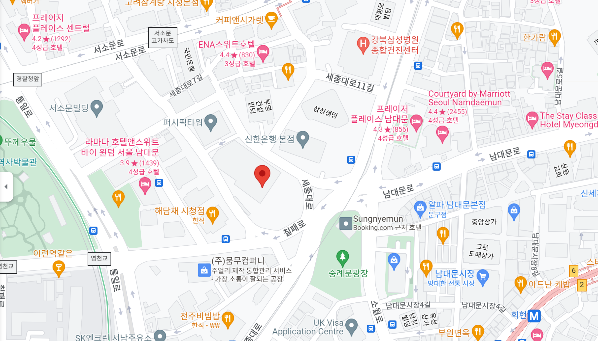
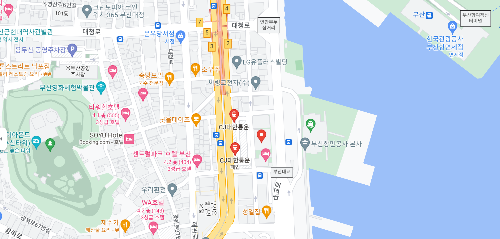

Think GAIA "For Life and the Earth"
회사 이름은 태평양, 대서양, 인도양을 의미하며, 세계에서 활약할 수 있는 기업이 되자는 의지가 담겨있다.
산요의 슬로건은 〈Think GAIA "For Life and the Earth"〉이었다.
에네루프 충전지와 Xacti 캠코더로 유명
2009년 세계 최초로 완전 방수가 되는 카메라를 출시하였다.
설립일 : 1947년
해체일 : 2013년
대표자 : 이와마 마사토
서울본점
 04513 서울특별시 중구 세종대로 39 (남대문로4가, 서울상공회의소) 8층
TEL: +82 2 773 5623 FAX: +82 2 773 5629
부산지점
48943 부산광역시 중구 대교로 119 (중앙동 6가) CJ대한통운빌딩 8층
TEL: +82 51 796 5151 FAX: +82 51 796 5152

Panasonic Holdings Corporation
2008년 11월 7일 파나소닉이 산요전기 인수를 공식 발표하였다.
2009년 12월 11일에 파나소닉이 산요 전기의 지분중 약 50%를 4037억엔에 인수하였으며,
2009년 12월 21일에 파나소닉의 자회사가 되어, 역사속으로 사라졌다.
Front
TH1은 슈팅형 캠코더의 기본 디자인을 충실하게 따르고 있다. 전면에는 30배 줌을 자랑하느 대구경 렌즈가 위치하고 있다. 1:1.8부터 시작하는 밝은 렌즈(F1.8-F4.3)를 통해 장소와 상관없이 보다 자유롭고 밝은 세상을 담아낸다. 렌즈 외곽 테두리는 알미늄으로 깔끔하게 처리되어 있으며 37mm의 구경으로 다양한 어뎁터를 사용할 수 있게 만들어졌다. 하단에는 좌우로 스테레오 마이크가 위치하고 있으며 렌즈 바로 아래에 플래쉬가 자리잡고 있다.
노출 제어 : P/A/S/M
렌즈 : 35mm 환산 43-1290mm, F1.8-F4.3, 1cm 접사
줌 : 광학 30배줌, 디지털 50배 줌
연사 : 초당 13장씩 29장 까지(2M: 1600 X 1200)/초당 13장씩 30장 까지(1.1M: 1184 X 888)
감도 : ISO50/100/200/400/800/1600
손떨림 보정 : 전자식 손떨림 보정
액정 : 3인치 230,000화소 285도 회전식 액정, 7단계 밝기
크기 : 53.3(W) x 57.3(H) x 105.0(D)mm
Top
상단에는 화각을 조정하는 줌 래버가 있다. 이 줌 레버는 사용자의 의도에 따라 느리고 빠르게. 2단계의 속도로 줌 배율을 조정할 수 있다. 중앙 우측에는 녹화된 영상을 재생할 때 사용되는 내장 스피커가 있는 홈이 위치한다.
Bottom
하단에는 삼각대 고정을 위한 홈이 있으며, 배터리 덮개가 자리잡고 있다. 또한 배터리 분실이나 촬영시 덮개의 이탈을 막기 위해 바디 후면에 배터리 덮개 잠금 스위치를 별도로 두어 단단하게 고정 시키고 있다.
Left
좌측에는 3안차의 큼직한 LCD 모니터가 위치한다. 이 LCD는 23만 화소로 만들어 졌으며 285도 회전이 가능한 폴더형 모니터로 로우앵글에서 하이앵글, 셀프샷까지 다양한 각도의 촬영을 가능하게 해준다. LCD 안쪽은 상단에 전원버튼 및 하단에 PC와 연결 또는 TV와 연결을 위한 멀티포트가 있다. 또한, HDTV와 연결을 위한 Mini HDMI포트도 내장하고 있으며, 우측에는 SD메모리 슬롯이 위치한다. 이 슬롯은 SDHC까지 지원하며 16GB이상(최대32GB)의 고용량 메모리도 지원하고 있다. 또 슬롯은 먼지의 유입을 막기 위해 손으로 개폐하는 부드러운 재질의 덮개로 이루어져 있다.
Back
후면에는 산요 전통의 사진/동영상 인터페이스로 이루어진다. 사진촬영의 반셔터 기능을 내장한 버튼이 왼쪽에, 동영상 촬영을 위한 버튼이 오른쪽에 위치한다. 촬영된 영상을 재생하고 촬영 모드로 전환하는 재생 버튼이 중아엥 위치하며, 하단 왼쪽에는 Set 기능과 4방향 선택의 편리한 스틱 버튼 및 그 우측에 메뉴 호출 버튼으로 구성된다. 하단에는 TH1의 밥줄인 전원 포트가 역시 덮개로 깔끔하게 마무리 되어 있으며 그 밑에, 배터리 덮개가 Lock 스위치가 위치한다.